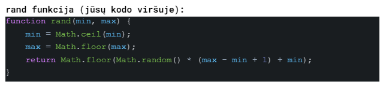

Tarpinis žinių patikrinimas #2
-
Vyksta automobilių žiedinės lenktynės. Automobiliui Nr. 55 liko nuvažiuoti 10 ratų. Suprogramuokite for ciklą, kuris imituotų 10 ratų automobilio važiavimą ir kiekviename cikle pateiktų (atspausdintų) kiek ratų dar liko automobiliui nuvažiuoti. Paskutinis skaičius turėtų būti 1. Visas rezultatas turėtų būti toks: 10 9 8 7 6 5 4 3 2 1 (skaičiai gali būti atspausdinti stulpeliu).
-
Vyksta automobilių žiedinės lenktynės. Automobiliui Nr. 55 liko nuvažiuoti 10 ratų. Kiekvieną ratą automobilis važiuoja skirtingu nuo 120 iki 220 km/h greičiu. Suprogramuokite for ciklą, kuris imituotų 10 ratų automobilio važiavimą, rand() funkcija generuokite atsitiktinį automobilio greitį o visiems ciklams pasibaigus pateikite bendrą visų 10 ratų vidutinį greitį.
-
Vyksta automobilių žiedinės lenktynės. Automobiliui Nr. 55 liko nuvažiuoti 10 ratų. Jo kuro bake liko 44 litrai kuro. Kiekviename rate automobilis sunaudoja atsitiktinį kiekį kuro: nuo 3 iki 6 litrų. Suprogramuokite for ciklą, kuris imituotų 10 ratų automobilio važiavimą, o ciklams pasibaigus pateikite išvadą ar automobiliui užteko kuro įveikti visus 10 ratų. Kurui pasibaigus ciklą nutraukite anksčiau laiko.
-
Vyksta automobilių žiedinės lenktynės. Automobiliui Nr. 55 liko nuvažiuoti 10 ratų (žiedų). Kiekviename žiede yra 5 posūkiai, kuriuose automobilio greitis yra atsitiktinis dydis nuo 20 iki 120 km/h. Imituokite tokią situaciją dviem for ciklais (vienas 10 ratų, kitas 5 posūkiai) ir ciklams pasibaigus atspausdinkite mažiausią automobilio greitį kažkuriame iš posūkių.
-
BOSO lygis) Dykumoje vyksta lenktynės. Automobilis Nr. 55 juose dalyvauja. Kiekviename kilometre gali atsitikti arba neatsitikti rand(0, 1) tokie trys įvykiai: netikėtai iššokti - neiišokti ant kelio kengūra, vairuotojas gali nespėti - spėti pasukti vairą ir vairuotojas gali nespėti - spėti paspausti stabdžius. Imituokite tokią situaciją do while ciklu- vienas kilometras vienas ciklo prasisukimas. Cikle rand() funkciją atsitiktinai generuokite visų įvykių tikimybę. Jeigu viename cikle įvyksta visi nepalankūs įvykiai: iššoka kengūra, vairuotojas nespėja pasukti vairo ir nespėja paspausti stabdžių while ciklą baikite. Ciklo pabaigoje atspausdinkite kiek kilometų sugebėjo nuvažiuoti automobilis be avarijos.
